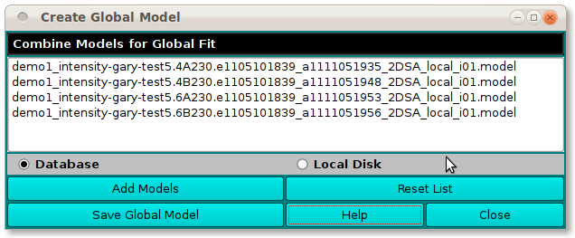
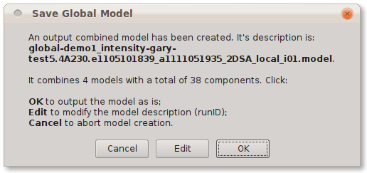
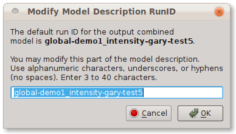

Manual
Manual
Manual
Manual
This utility combines selected models into a single global model that can be used in global fits. The most common use of its output is to form an input to the Initialize Genetic Algorithm program in which a global set of buckets may be created for use in a global fit Genetic Algorithm run.

When the Save Global Model button is clicked, a dialog reports on the combined global model to be created and allows the user options in saving it.

If the user wishes to modify the RunID part of the output model description, a click on the Edit button brings up a dialog for entering new ID text.
